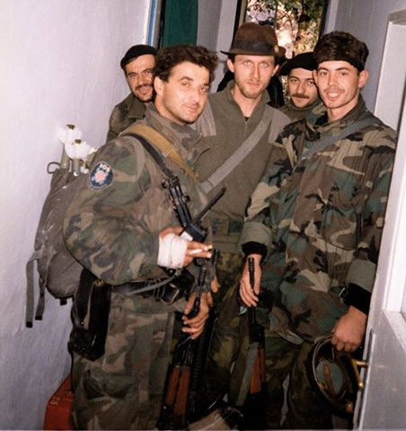

Imotski se prvi put spominje pod nazivom "IMOTA" u knjigama cara Konstantina Porfirogeneta u ranom srednjem vijeku
Povijesno je Imotski središte starohrvatske župe Imote. Dne 2. kolovoza 1717., na dan Gospe od Anđela, Imotski je oslobođen od turske vlasti. Po Požarevačkom miru, mletačkoj Dalmaciji je trebala pripasti cijela Imota/Imotsko polje, međutim prilikom utvrđivanja granica su Turci potplatili mletačkog mjernika, tako da je preko pola Imotskog polja ostalo u današnjoj BiH. Kraj oko Gruda, Posušja i Širokog Brijega t.j. Zagorje, Vir, Gradac, Grude, Kočerin, Drinovci, Tihaljina, Tursko Aržano, Turska Vinica, Turske Ričice, Turski Cvitića most, Tursko Posušje i Turska Gorica sačinjava Općinu Imotski, nazvano Bekija (tur. ostatak). U novijoj povijesti Imotski nije izravno bio poprište ratnih zbivanja, iako je dao mnoštvo dragovoljaca koji su branili hrvatsku domovinu, naročito u Domovinskom ratu.
Za vrijeme Dompovinskog rata mnogo je Imoćana dalo svoj doprinos i živote za Hrvatsku.Pogotovo u Dubrvniku,Zadru,Vukovaru,Kruševu...Jedan od heroja je Velimir Đerek-Sokol.
Velimir Đerek - Sokol,heroj Domovinskog rata bio je porijeklom iz Imotskoga.
Velimir Đerek - Sokol (Vinjani Gornji, Imotski, 14. kolovoza 1965. - Vukovar, 12. listopada 1991.), dragovoljac Domovinskog rata. Rođen je u Vinjanima Gornjim kod Imotskog od majke Zorke i oca Ante. Djetinjstvo i mladost proveo je u rodnom Imotskom, gdje je i završio školu. Godine 1991. u doba velikosrpske agresije na Hrvatsku, Velimir je kao dragovoljac otišao u rat. Sudbina ga je odvela u razrušeni Vukovar. U ratu je se iskazao kao hrabar vojnik te te je zbog toga dobio nadimak ˝Sokol˝. Braneći Vukovar, pogiba na Sajmištu 12. listopada 1991. od granate. U svibnju 1998. posmrtni su mu ostaci identificirani te je pokopan na groblju u Vinjanima Gornjim. U njegovu čast je igralište u Vinjanima Gornjim nazvano Velimir Đerek - Sokol.
